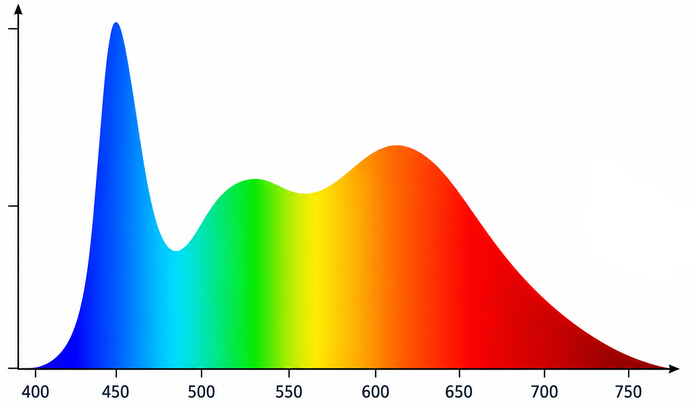
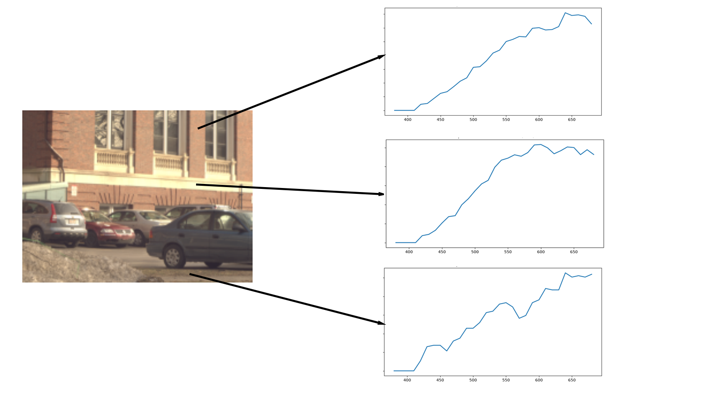

Resources
This page contains all the resources I've collected during my research.
While some materials come directly from the original cited sources, most were gathered from blogs, online repositories, forums, and shared directly by their authors,
whom I would like to sincerely thank for their contribution.
If you decide to use them for your work, do not forget to include the respective citations.
To cite the datasets as provided by me, please also include the following citation: lt_datasets.bib.
For any questions, feel free to contact me.

Spectral Light Sources
Spectral emission curves collected from multiple measured light sources.
Primarily indoor lamps (LED / Incandescent / HID), but also daylight + sunset illumination.
Total count: 4928 measurements
Note: Only visible wavelengths! (380nm to ~740nm)

Hyperspectral Captures
Hyperspectral captures collected from multiple sources.
Only low-res available for immediate download, contact me for high-res.
Total count: 146 captures
Note: Only visible wavelengths! (380nm to ~740nm)